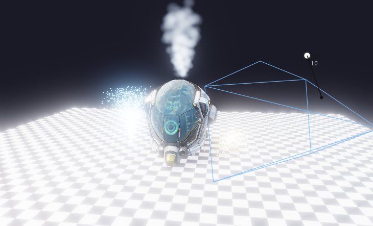
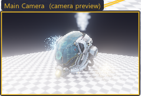
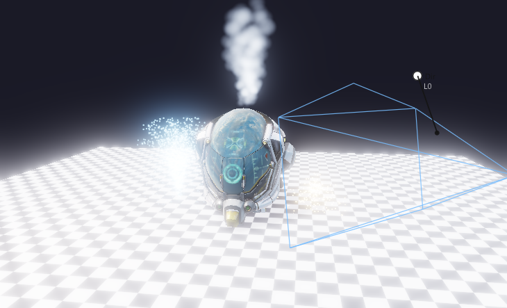
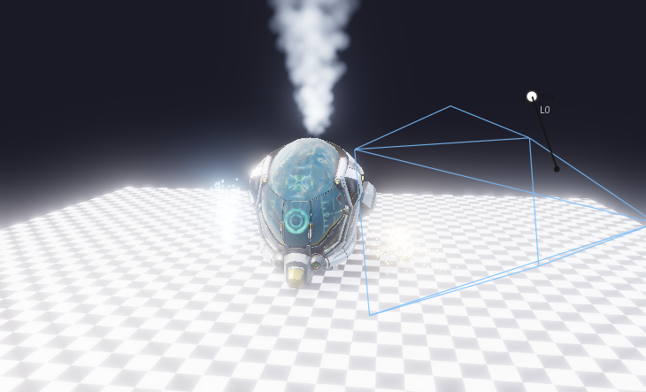
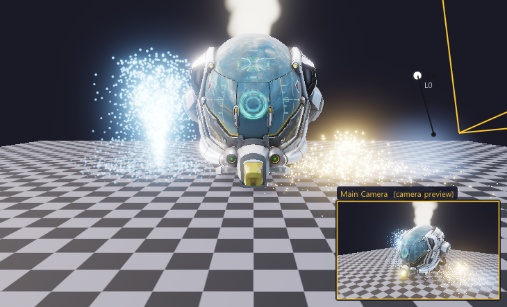
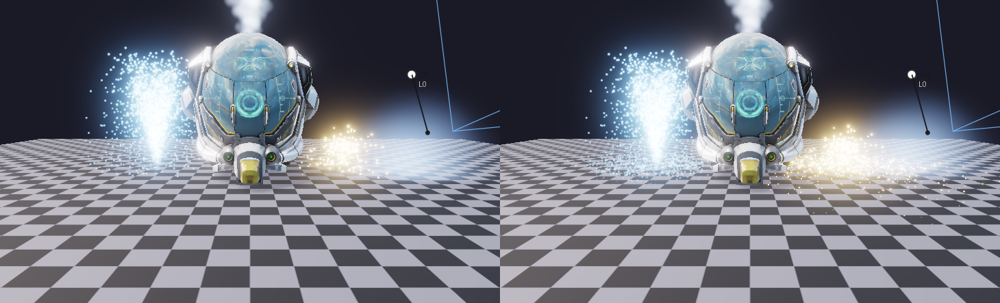
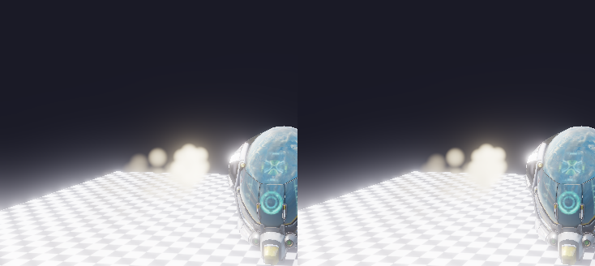

GPU 파티클(VFX) 구현 기록
2026-11-17 · 세 단계 모두 완료. 컴퓨트 RHI(compute-uav-record.html) 위에 컴퓨트 셰이더로 움직이는 GPU 파티클을 세 단계로 올리는 과정을 단계마다 적는 기록입니다. 단계가 검증되면 그 장을 채우고, 아직 하지 않은 단계는 계획과 "시작 전에 확인할 것"만 둡니다.
| 단계 | 내용 | RHI 변경 | 상태 |
|---|---|---|---|
| 1 | 고정 최대 개수 파티클: CS 가 링 버퍼로 생성·적분, VS 가 SV_VertexID 로 버퍼를 읽어 빌보드, 가산 블렌딩 | 없음 | 완료 2026-11-17 |
| 2 | GPU 가 생존·사망 목록과 개수를 관리하고 살아 있는 것만 그림 — 간접 그리기·디스패치 | 있음 (raw 버퍼, 간접 인자 버퍼, DrawInstancedIndirect/DispatchIndirect, D3D12 커맨드 시그니처) | 완료 2026-11-17 |
| 3 | 알파 블렌딩 파티클의 바이토닉 정렬(CS), 깊이 충돌, 소프트 파티클 | 있음 (읽기 전용 DSV, ResourceState::DepthRead) | 완료 2026-11-17 |
기준: 커밋 04c26bb(컴퓨트 RHI 완료) + 작업 트리. 위치는 "파일 + 함수 이름"이 기준입니다. 이 문서는 새로 만든 것입니다.
1. 계획 — 왜 이 세 단계인가
GPU 파티클의 핵심은 "CPU 가 파티클 하나하나를 모르게 하는 것"입니다. 단계마다 CPU 가 아는 것을 하나씩 GPU 로 넘깁니다.
| 단계 | CPU 가 아는 것 | GPU 가 하는 것 | 새로 검증되는 RHI 경로 |
|---|---|---|---|
| 1 | 이번 프레임 생성 수, 링 버퍼 위치, 버퍼 크기(= 그리는 쿼드 수) | 생성 초기값(난수), 적분, 빌보드 | VS 의 구조체 버퍼 SRV, 다음 프레임 SRV→UAV 전이(D3D11 바인딩 해제) |
| 2 | 이미터의 생성률뿐 | 사망 목록에서 꺼내 생성, 생존 목록 작성, 그리기 인자 작성 | 원자적 카운터, 같은 버퍼에 연달아 쓰는 Dispatch 사이의 UavBarrier(Buffer), 간접 그리기·디스패치 |
| 3 | 정렬 기준(카메라) | 뷰마다 깊이 정렬, 깊이 버퍼와 충돌·부드러운 경계 | 깊이 텍스처를 읽으면서 깊이 테스트 (읽기 전용 DSV 또는 복사) |
2. 1단계 요약 (2026-11-17 완료)
Draw(N × 6)·112 바이트 상수·슬롯 하나짜리 시뮬레이션 셋은 지금 트리에 없습니다. 지금 코드는 10·11장이 기준입니다. 컴포넌트(4장)·빌보드·PS·프레임 순서는 그대로입니다.ParticleEmitter 컴포넌트를 오브젝트에 붙이면, 렌더러가 이미터마다 파티클 버퍼(RWStructuredBuffer)를 만들어 프레임에 한 번 컴퓨트로 생성·적분하고, 메인·미리보기 뷰에서 정점 버퍼 없이 빌보드로 그립니다. RHI 는 고치지 않았습니다. 편집 모드에서도 움직입니다. 이미터가 없는 씬은 이전과 픽셀 단위로 같고, 고정 스텝(--particle-step)에서는 실행마다·두 백엔드 사이 모두 같은 화면입니다.
ParticleTest.json, D3D12, 고정 스텝 120 프레임. 헬멧 위 연기(위로 뜨며 커짐), 왼쪽 분수(파란색, 중력), 오른쪽 불꽃(전방향, 강한 HDR 색 — 밝은 바닥 위라 잘 안 보임). 블룸이 HDR 색을 번지게 함.
3. 흐름
Renderer::Render
BeginResourceUploads
BuildDrawList → addObject → CollectEmitter 이미터 컴포넌트 + 월드 위치·방향(로컬 +Y) 모음 (메시 없는 오브젝트도)
UpdateParticleEmitters(totalTime) dt 결정, 버퍼·셋 생성/크기 변경, 생성 수·링 위치, b8 올림 (이미터마다 1 번)
EndResourceUploads
SimulateParticles (렌더 패스 밖, 프레임에 1 번)
이미터마다: Barrier(particles, UnorderedAccess) → SetComputeResourceSet(0, simSet) → Dispatch(ceil(N/64))
→ Barrier(particles, ShaderResource)
ShadowPass → MainPass
DrawItems: 불투명 → 하늘 → 블렌딩 항목 → DrawParticles → 디버그 선
DrawParticles: SetPipelineState(Particle) → SetResourceSet(0, frame) → 이미터마다 SetResourceSet(1, drawSet), Draw(N × 6)
끝나면 SetResourceSet(1, objectSet) 로 되돌림
후처리 → 톤 → PreviewPass (같은 DrawItems → 같은 파티클 버퍼, b0 만 미리보기 카메라)
프레임 끝: 버퍼 상태 → Common (다음 프레임에 다시 Barrier)4. 컴포넌트 (Scene/ParticleEmitter)
CameraComponent 와 같은 방식의 엔진 컴포넌트입니다 (SHERLOCK_BEHAVIOUR). Reflect 만 쓰면 씬 저장·불러오기, 인스펙터, Add Component 목록, undo 가 모두 따라옵니다. Update 를 쓰지 않으므로 Play 와 상관없이 렌더러가 매 프레임 시뮬레이션합니다.
| 속성 (씬 키) | 기본값 | 뜻 |
|---|---|---|
maxParticles | 4096 | 버퍼 크기, [1, 262144] 로 자름. 다 차면 가장 오래된 것부터 덮어씀 |
spawnRate | 500 | 초당 생성 수 (소수 부분은 다음 프레임으로 넘김) |
lifetime | 2 | 초 |
startSpeed · speedVariation | 3 · 0.3 | 속도 = startSpeed × (1 − variation × 난수) |
spreadAngle | 20 | 방출 원뿔의 반각(도). 축 = 오브젝트의 로컬 +Y |
emitRadius | 0.05 | 생성 위치가 퍼지는 구 반지름 |
gravity | (0, −4, 0) | 가속도 (월드) |
startSize → endSize | 0.08 → 0.02 | 쿼드 한 변, 수명 동안 선형 보간 |
color × intensity | (1, 0.55, 0.2) × 4 | HDR 색. 1 을 넘으면 블룸에 걸림 |
5. GPU 데이터
| 항목 | 값 |
|---|---|
파티클 (Common.hlsli struct Particle) | 32 바이트: float3 position, float age, float3 velocity, float lifetime. age >= lifetime = 죽음 (NaN 도 죽음으로) |
| 파티클 버퍼 | 이미터마다 SB_Particles: Default, SRV | UAV, stride 32 (kParticleStride) |
| 이미터 상수 b8 | ParticleEmitterConstants 112 바이트 (오프셋 static_assert). 이미터마다 Dynamic 버퍼 한 벌, 프레임에 한 번 올림 |
| 시뮬레이션 셋 | Layout_ParticleSim: b8 (CS), u0 BufferUnorderedAccess (CS) |
| 그리기 셋 (셋 1) | Layout_ParticleDraw: b8 (VS), t21 BufferResource (VS). 셋 0 은 프레임 셋 (b0 의 view·proj) |
그리기 PSO Pass_Particle | 정점 입력 없음, 컬링 없음, 깊이 테스트 Less + 쓰기 끔, 가산 블렌딩 (One + One, 알파 유지), FP16 + D24S8 |
| 컴퓨트 PSO | ComputePass_ParticleSim (GetComputePipeline) |
6. 시뮬레이션 (ParticleSimComputeShader.hlsl, Renderer::UpdateParticleEmitters)
- 링 버퍼 생성: CPU 가
spawnCount = floor(spawnRate × dt + 이월분)와 시작 인덱스head를 정해 b8 로 넘기고head += spawnCount. CS 에서(i − spawnStart) mod N < spawnCount인 스레드가 새 파티클을 씀. 살아 있던 것이 있어도 덮어씀 (가장 오래된 것). - 프레임 안 출생 시각: 한 프레임에 태어난 파티클을 한 점에 두면 프레임마다 층이 보입니다. 구간 앞쪽일수록 일찍 태어난 것으로 보고
age = dt × (1 − (offset + 0.5) / spawnCount)만큼 미리 움직여 둡니다 (등가속도 식). - 난수: PCG 해시 (
PcgHash,Random01). 씨앗 = 이미터의 프레임 번호. 처음에는 버퍼 슬롯i로 섞었다가PcgHash(offset ^ PcgHash(seed))— "이번 프레임에 몇 번째로 태어났나" — 로 바꿨습니다. 2단계는 슬롯을 GPU 가 사망 목록에서 고르므로 슬롯에 묶인 난수는 실행마다 달라지고, 출생 순번에 묶어야 2단계 화면을 1단계와 비교할 수 있습니다. 상태를 저장하지 않으므로 같은 (씨앗, dt) 면 결과가 같습니다. - 방향: cosθ 를 [cos(반각), 1] 에서 고르게 → 구면 위에서 고른 원뿔 분포. 생성 위치는 구 안의 고른 점 (반지름에 세제곱근).
- 적분: 반암시적 오일러 (속도 먼저, 새 속도로 위치).
- 새 버퍼 초기화: 버퍼를 만든 프레임에는 b8 의
reset = 1로 CS 가 전부 죽은 상태로 씀 (D3D11 은 초기 데이터 없이 만들므로 내용이 정해져 있지 않음). 그 프레임에는 생성하지 않음. - dt: 실제 시간 모드는
totalTime의 차이를 0.1 초에서 자름.RenderSettings::particleFixedStep > 0이면 프레임마다 그 값 — 자동 검증의--particle-step=0.0166667.
7. 그리기 (ParticleVertexShader.hlsl · ParticlePixelShader.hlsl)
Draw(N × 6), 정점 버퍼 없음. VS 가SV_VertexID / 6로 파티클,% 6로 쿼드 모서리를 정함.- 빌보드: 뷰 공간에서 중심에 모서리 × 크기/2 를 더한 뒤 투영. 카메라의 오른쪽·위 축을 따로 뽑지 않아도 늘 화면을 향하고, 직교 카메라에서도 그대로 동작.
- 죽은 파티클: 세 정점을 모두 클립 공간 밖 (
z = −1) 한 점에 둠 → 래스터라이저가 버림. 1단계는 버퍼 전체를 그리므로 죽은 파티클도 VS 6 번은 돕니다 — 2단계가 없애는 비용. - 색: 처음 10% 동안 켜지고 끝까지 선형으로 꺼짐. PS 는 텍스처 없이
(1 − r²)²원형 감쇠,r ≥ 1은 discard. - 가산 블렌딩이라 그리는 순서와 상관없음 → 정렬 없음. 깊이는 테스트만 해서 불투명 물체 뒤는 가려지고 파티클끼리는 가리지 않음.
8. 설계 결정·함정
- 이미터마다 상수 버퍼: 공용 버퍼 하나를 시뮬레이션과 뷰마다의 그리기 사이에 다시 올리면, D3D12 에서 업로드 링 주소가 바뀌어 루트 CBV 순서 문제가 생깁니다 (블러
PostParams에서 겪은 것). 프레임에 한 번 올린 값을 CS·VS 가 같이 읽게 했습니다. - 셋 1 되돌리기: 파티클 그리기는 셋 1 에 파티클 셋을 꽂습니다. 미리보기 패스의
DrawItems는 셋 1 = 오브젝트 셋을 전제하므로 그리기 뒤에SetResourceSet(kSetObject, m_objectSet)로 되돌립니다. - GPU 상태의 키: 오브젝트 ID × 16 + 오브젝트 안의 순번. undo·씬 로드가 오브젝트를 다시 만들어도 ID 가 같으면 이어서 씁니다. 이번 프레임에 보이지 않은 키(삭제·꺼짐)는 리소스를 지웁니다 (D3D12 는 지연 해제).
- 매 프레임 배리어: 버퍼 상태는 프레임 끝에 Common 으로 돌아가므로 (컴퓨트 RHI 규칙) 매 프레임 UAV → SRV 를 다시 겁니다. D3D11 에서는 UAV 전이가 지난 프레임에 VS t21 에 남은 SRV 를 풀어 줍니다.
- 결정적 시간: 에디터 시간은 실제 시계라 스크린샷이 실행마다 달라집니다. 시뮬레이션만 프레임 수에 묶는
--particle-step을 넣었습니다 (엔진 시간은 그대로). - 메시 없는 오브젝트:
BuildDrawList의addObject가 메시 없으면 바로 돌아가므로, 이미터 수집을 그 앞에 둡니다.
9. 1단계 검증
| 확인 | 결과 |
|---|---|
이미터 없는 씬(ComputeBlur.json) — 변경 전 ↔ 후 | 에디터·게임, D3D11·D3D12 모두 차이 0 |
ParticleTest.json, 고정 스텝 120 프레임, 같은 백엔드 두 번 | D3D11 0, D3D12 0 |
| 같은 조건 D3D11 ↔ D3D12 | 에디터 0 / 게임 11 픽셀 1 단계 |
카메라 미리보기 (--select="Main Camera") | 미리보기에 파티클이 그려짐, 씬 내용 D3D11 = D3D12 (차이는 제목줄 백엔드 이름과 기존 잡음 띠뿐) |
| 바인딩 대조 | [Particle] ParticleVS t21 / b0 / b8, [ParticleSim] ParticleSimCS u0 / b8 OK, cbuffer 112 바이트 일치 |
GBV (--gpu-validation=1, D3D12) | 메시지 0 |
| 실제 시간 모드 (플래그 없음) | 정상, 경고 없음 |
핫리로드 (ParticleSimComputeShader.hlsl 수정 시각) | 두 백엔드 모두 컴퓨트 PSO·파티클 PSO 가 gen=2 로 다시 생성 |
확인하지 못한 것
- 에디터에서 이미터를 붙이고·떼고·끄는 것,
maxParticles를 바꿔 버퍼를 다시 만드는 경로 (자동 검증 플래그가 없음 — 손으로 확인 필요) - 이미터 오브젝트는 메시가 없어 씬 뷰에서 클릭으로 고를 수 없음 (Hierarchy 에서 고름). 아이콘 기즈모는 아직 없음
- Release 빌드, 다른 GPU
- (앞 작업에서 이어짐) 실행 중 Compute blur 체크박스 토글
10. 2단계 — 간접 그리기 + GPU 생존·사망 목록 완료 2026-11-17

10.1 RHI 에 더한 것
| 항목 | 내용 | 왜 |
|---|---|---|
BufferBind_Raw, BufferBind_IndirectArgs | raw(ByteAddressBuffer) 뷰, 간접 인자 버퍼. 규칙은 ValidateBufferDesc 한 곳에서 두 백엔드가 같이 씀 (Default 만, raw 는 stride 0·크기 4 의 배수, IndirectArgs 는 Raw 필수·Vertex/Index/Constant 와 함께 못 씀) | D3D11 의 DRAWINDIRECT_ARGS 는 BUFFER_STRUCTURED 와 함께 쓸 수 없음 → 구조체 버퍼 UAV 로는 인자 버퍼에 쓸 수 없음. raw / typed 중 raw 를 고름 (리플렉션 타입이 따로 있어 구분이 깔끔함) |
BindingType::RawBufferResource (t#) / RawBufferUnorderedAccess (u#, 컴퓨트 전용) | 리플렉션 D3D_SIT_BYTEADDRESS / D3D_SIT_UAV_RWBYTEADDRESS. D3D11: SRV BUFFEREX + RAW, UAV BUFFER_UAV_FLAG_RAW (R32_TYPELESS). D3D12: 서술자 테이블에 raw SRV/UAV | 컴퓨트가 인자를 씀 |
ResourceState::IndirectArgument | D3D12 INDIRECT_ARGUMENT. D3D11 은 이 상태로 갈 때 그 버퍼의 UAV 바인딩을 풂 | 인자를 읽는 동안 UAV 로 쓸 수 없음 |
DrawInstancedIndirect(args, offset) / DispatchIndirect(args, offset) | Draw / Dispatch 와 같은 바인딩·검사 경로. 상태·플래그·오프셋 검사. D3D12 는 장치 초기화 때 커맨드 시그니처 두 개(DRAW 16 바이트, DISPATCH 12 바이트, 루트 시그니처 nullptr)를 만들어 ExecuteIndirect | 개수를 GPU 가 앎 |
인스턴스 간접을 고른 이유: 인자 {정점 6, 인스턴스 = 생존 수, 0, 0} 이라 시뮬레이션이 센 생존 수를 그대로 쓰면 됨. 정점 수 간접(생존 × 6)이면 곱하는 단계가 하나 더 필요.
10.2 프레임 흐름 (이미터마다)
버퍼: particles(u0) · dead(u1) · aliveIn(u2) · aliveOut(u3) · counters(u4) · args(u5, raw)
생존 목록 두 개를 번갈아 씀 — 지난 프레임의 aliveOut 이 이번 프레임의 aliveIn
모두 → UnorderedAccess
[새 버퍼만] CS_ParticleReset 전부 죽음, dead = 모든 슬롯, 개수 0, 인자 {6,0,0,0} {0,1,1} → UAV 배리어
args → IndirectArgument
CS_ParticleSim DispatchIndirect(args, 16) aliveIn 을 적분 → 살면 aliveOut 에, 죽으면 dead 에 (InterlockedAdd)
args → UnorderedAccess → UAV 배리어
CS_ParticleArgs 스레드 1개 emit = min(원하는 수, dead 길이). 꺼낼 dead 구간·붙일 alive 구간의 시작을 기록,
그리기 인자 {6, 생존+emit, 0, 0}, 다음 프레임 디스패치 인자, 생존 카운터 0 으로 → UAV 배리어
CS_ParticleEmit Dispatch(ceil(원하는 수/64)) 스레드 t: dead[구간+t] 슬롯에 새 파티클, aliveOut[구간+t] 에 붙임
particles · aliveOut → ShaderResource, args → IndirectArgument
씬 패스마다: DrawInstancedIndirect(args, 0) — VS: particles[aliveList[SV_InstanceID]]- 생성에 원자 연산이 없음: Args 단계가 구간 시작을 정해 두므로 생성 스레드 t 의 슬롯·목록 위치가 정해짐. 순서가 흔들리는 것은 시뮬레이션의 InterlockedAdd 뿐 → 그리는 순서만 달라지고, 가산 블렌딩이라 FP16 덧셈 반올림 차이(최하위 1 단계)만 남음.
- 1단계와 같은 파티클: 난수·출생 시각이 출생 순번 t 에 묶이고, 태어난 프레임에는 적분하지 않으며 (생성이 시뮬레이션 뒤), 죽음 판정(
age < lifetime)과 첫 생성 프레임(리셋 다음)이 같음. 버퍼가 다 차지 않으면 1단계와 같은 집합이 살아 있음. - 다 찼을 때가 다름: 1단계는 가장 오래된 것을 덮어썼고, 2단계는 사망 목록이 빌 때까지만 태어남 (그림 4).
- 시뮬레이션 셋에서 u5 를 뺌 (
Layout_ParticleStep): 처음에는 네 CS 가 레이아웃 하나를 썼는데, 간접 디스패치 동안 인자 버퍼가 IndirectArgument 상태인데도 셋이 그것을 u5 UAV 로 바인딩하고 있었음. 셰이더가 u5 를 쓰지 않아도 바인딩 자체가 위험이고, 두 백엔드의 상태 검사가 첫 실행에서 잡았음 ("UAV 로 쓰는 버퍼 'RB_ParticleArgs' 가 IndirectArgument 상태"). - 셰이더 파일이 넷: 런타임이 파일 이름으로
.cso를 찾으므로 파일 하나에 진입점 하나. 공용 선언은Common.hlsli의#ifdef PARTICLE_SIM블록 (핫리로드 감시 대상이라서). - CPU 는 생존 수를 읽어 오지 않음 — Stats 의 "spawned" 는 원하는 수.

ParticleExhaust.json: 분수만 capacity 1024 (필요 1,500 × 1.8 ≈ 2,700). 프레임당 25 개씩 41 프레임 만에 슬롯이 다 차고, 첫 파티클이 죽는 108 프레임 무렵까지 생성이 멈춤 → 분수가 끊긴 덩어리로 나옴 (75 · 100 · 200 프레임을 찍어 보면 덩어리가 올라갔다 비었다 함). 그림은 240 프레임. 오류·경고 없음.10.3 2단계 검증
| 확인 | 결과 |
|---|---|
회귀: ComputeBlur.json 에디터, 두 백엔드 | 차이 0 |
회귀: MasterChiefWalk.json | 5~6 픽셀 — 바꾸지 않은 실행끼리도 같은 자리에서 같은 정도로 달라짐 (애니메이션이 실제 시간). 회귀 아님 |
1단계 ↔ 2단계 (ParticleTest, 고정 스텝 120 프레임) | 에디터 D3D11 496 / D3D12 577 픽셀, 게임 517 / 618 픽셀, 모두 최대 1 |
| 2단계 실행 두 번 | D3D11 431 / D3D12 522 픽셀 최대 1 (생존 목록 순서). D3D11 ↔ D3D12 476 픽셀 최대 1 |
| 누수: 300 ↔ 3,000 프레임, 이미터 영역 평균 밝기 | 분수 165.6 / 165.4, 연기 112.7 / 113.7, 불꽃 221.7 / 222.1 — 슬롯이 새면 줄어야 함 |
고갈 (ParticleExhaust.json) | 그림 4, D3D11 ↔ D3D12 최대 1 |
미리보기 뷰 (--select="Main Camera") | 미리보기에 파티클이 그려짐. D3D11 ↔ D3D12 최대 1 (콘솔 쪽 기존 잡음 띠 제외) |
| 게임 모드, 실제 시간 모드 | 정상, 경고 없음 |
실행 중 이미터 생성·삭제 (ParticleSpawn.json, --play=1: Spawner 가 0.1 초마다 EmitterBurst.prefab(이미터 + Lifetime 0.6 초) 을 만듦) | D3D11 16 개, D3D12 24 개, GBV 40 개를 만들고 지움 (동시에 6 개). 오류·GBV 메시지 0 — 이미터마다 버퍼 7 개·셋 6 개의 생성·지연 해제 경로 |
GBV (--gpu-validation=1) | 메시지 0 — 처음 쓰인 UavBarrier(Buffer), ExecuteIndirect, raw UAV 서술자, IndirectArgument 전이 포함 |
핫리로드 (ParticleEmitComputeShader.hlsl) | 두 백엔드 모두 컴퓨트 PSO 4개 gen=2 |
확인하지 못한 것
- 실행 중
maxParticles변경 (같은 키로 버퍼를 다시 만드는 경로) — 손으로 확인 필요 RawBufferResource(raw SRV, t#) 는 RHI 에 있지만 렌더러가 쓰지 않아 한 번도 실행되지 않음. D3D12 에서 구조체 SRV(루트 SRV)와 달리 서술자 테이블에 들어감- RHI 의 거부 경로 (잘못된 플래그 조합, 범위 밖 오프셋) 는 코드만 있고 일부러 실행해 보지 않음
- Release 빌드, 다른 GPU
11. 3단계 — 소프트 파티클·깊이 충돌·알파 정렬 완료 2026-11-17
blendMode) 이고, 알파 이미터만 뷰마다 바이토닉 정렬로 먼 것부터 그립니다. 새 속성의 기본값은 모두 "끔"이라 기존 씬(ParticleTest)은 2단계와 최하위 1 단계 차이로 같습니다.
ParticleAll.json (분수·불꽃 충돌, 바닥 안개 소프트, 연기 알파) 과 카메라 미리보기, D3D12. 충돌 두께 수정 (11.3) 전에 찍음.결정 (사용자): 깊이 읽기 = 읽기 전용 DSV (RHI 확장), 알파·정렬 = 이미터 옵션, 충돌 깊이 = 이번 프레임.
11.1 RHI — 읽기 전용 깊이
| 항목 | D3D11 | D3D12 |
|---|---|---|
ResourceState::DepthRead | 상태 추적만 | DEPTH_READ | PIXEL_SHADER_RESOURCE | NON_PIXEL_SHADER_RESOURCE — 읽기 전용 DSV·PS SRV·CS SRV 를 같은 상태에서 |
DepthAttachment::readOnly | 텍스처마다 처음 쓸 때 D3D11_DSV_READ_ONLY_DEPTH | READ_ONLY_STENCIL DSV 를 만들어 둠. 읽기 전용 패스는 그 깊이의 SRV 바인딩을 풀지 않음 (쓰기 패스는 예전처럼 풂) | D3D12_DSV_FLAG_READ_ONLY_DEPTH | _STENCIL 서술자를 처음 쓸 때 만듦 (DSV 힙 16 → 32) |
| 규칙 검사 (두 백엔드 같음) | 읽기 전용 패스는 지우지 않음 (load 가 Load 가 아니면 한 번 기록). 깊이가 DepthRead 가 아니면 기록. 깊이 쓰기 PSO 로 그리면 기록하고 드로우를 건너뜀. DepthRead 인 깊이로 쓰기 패스를 열면 기록. | |
11.2 씬 패스 둘로 (RenderScenePass)
Barrier(depth, DepthWrite)
패스 1 hdr Clear, depth Clear 불투명 → 하늘 → 블렌딩 항목
Barrier(depth, DepthRead) ← 그릴 파티클·디버그 선이 없으면 여기부터 생략 (패스 수 그대로)
[메인 뷰만] SimulateParticles 리셋 → 적분 + 충돌 (t23 = 깊이, b9 = 메인 카메라) → 개수·인자 → 생성
SortParticles(뷰 번호) 알파 이미터만, 이 뷰의 카메라로
패스 2 hdr Load, depth Load + readOnly 파티클 (t23 = 이 뷰의 깊이) → 디버그 선- 시뮬레이션이 프레임 처음에서 메인 패스 사이로 옮겨짐 → 충돌이 이번 프레임 깊이·카메라를 씀. 미리보기 뷰는 같은 결과를 그리기만 함.
- 디버그 선도 패스 2 로 옮김 (깊이 테스트 없는 PSO 라 결과 같음).
- 블렌드를 프리멀티플라이드 (
One + InvSrcAlpha) 하나로: 가산 이미터는 알파 0 을 내보내 예전One + One과 같은 값, 알파 이미터는 색 × 알파 · 알파. PSO 하나.
11.3 소프트 파티클과 충돌
- 소프트 (
softnessm, 0 = 끔): PS 가t23.Load(SV_Position)의 깊이를 투영 행렬 (proj._m22 / _m32 / _m23) 로 뷰 z 로 되돌려, 파티클 뷰 z 와의 차이 / softness 를 곱함. 원근·직교 둘 다. - 충돌 (
collide,bounce): 적분 뒤 위치를 메인 카메라로 투영해 그 픽셀 깊이와 비교. 깊이 버퍼보다 뒤이고 표면에서 0.3 m (kCollisionThickness) 안이면 충돌 — 이전 위치로 되돌리고, 이웃 두 픽셀을 월드로 되돌려 만든 법선 (카메라 쪽으로 방향을 맞춤) 의 속도 성분을(1 + bounce)배 빼서 반사. 화면 밖·카메라 뒤·가려진 곳에서는 충돌하지 않음 (화면 공간 충돌의 한계). - 두께는 법선 방향으로 잼: 처음에는 뷰 z 차이 < 0.3 m 로 판정했는데, 직교 카메라로 바닥을 비스듬히 (약 10°) 보는 게임 화면에서 분수 파티클이 바닥을 뚫고 떨어졌음 (그림 6-1 가운데). 바닥 아래 0.1 m 가 뷰 z 로는 0.1 / sin 10° ≈ 0.57 m 라 한 스텝에 두께를 넘음. 지금은 뷰 z 차이를 느슨한 상한 (두께 × 5) 으로만 쓰고, 표면 점에서 법선 방향 거리가 −0.3 m 보다 얕을 때 충돌로 봄. 같은 판정이 원근에도 적용됨 (원근 시험 화면에서는 바닥이 가려 새는 양을 재지 못함).
- 충돌 상수 b9 (
ParticleCollisionConstants160 바이트) 는 프레임에 한 번, 깊이 셋 (t23) 은 뷰 타깃마다 — 크기를 바꿔 깊이를 다시 만들면 셋도 다시 만듦.

ParticleDepthOff.json, 오른쪽 ParticleDepth.json (300 프레임, 법선 방향 두께). 오른쪽은 분수(파랑)·불꽃(노랑)이 바닥에 튕겨 퍼짐.
ParticleOrtho.json 게임 모드 (메인 카메라 직교, D3D12, 200 프레임). 왼쪽 충돌 끔, 가운데 뷰 z 두께 (고치기 전), 오른쪽 법선 방향 두께. 바닥 아래 (화면 아래 20%) 밝은 픽셀 10,516 → 1,050 → 106.
11.4 알파 이미터 정렬 (바이토닉, 뷰마다)
CS_ParticleSortInit: 생존 목록 앞 생존 수 칸 (개수 버퍼를 t24 SRV 로 읽음) → (키 = 이 뷰의 뷰 z, 값 = 파티클 번호). 나머지는 2 의 거듭제곱 (ParticleSortCount, 최소 64) 까지 가장 가까운 키로 채워 끝으로 보냄.CS_ParticleSortStep: k = 2 … N, j = k/2 … 1 마다 한 번. N = 2^m 이면 m(m+1)/2 번 (4,096 → 78, 262,144 → 171). 단계 사이 UAV 배리어.- (k, j) 는 단계마다 Default 상수 버퍼를 초기 데이터로 한 번 만들어 둠 (
EnsureParticleSortSteps, 큰 N 의 단계 목록은 작은 N 목록을 앞에 그대로 가짐). 디스패치마다 다른 값을 Dynamic 버퍼 하나에 올릴 수 없음 (D3D12 프레임당 한 번 규칙). 엔진에서 Default 상수 버퍼는 처음 — D3D12 백엔드가 크기를 256 으로 올리고 그만큼 초기 데이터를 복사하므로 구조체를 256 바이트로 맞춤. - 정렬 결과는 이미터 × 뷰 (메인 0, 미리보기 1) 마다 따로. 뷰 행렬 b10 은 뷰마다 Dynamic 버퍼. 정렬은 그 뷰의 패스 2 직전 (렌더 패스 밖).
- 그리기: 알파 이미터 먼저 (t22 = 정렬된 번호), 가산 이미터 그 위. 정렬은 이미터 안에서만 — 겹치는 알파 이미터끼리는 정렬되지 않음.
- 시험하다 알게 된 것: 한 이미터의 파티클 색이 모두 같으면 프리멀티플라이드 알파의 결과는 순서와 상관없음 (c·a₂ + (1−a₂)(c·a₁ + (1−a₁)d) 이 a₁, a₂ 에 대칭). 정렬 효과를 보려면 파티클마다 색이 달라야 해서
endTint(수명 끝 색 배율, 기본 흰색 = 변화 없음) 를 더함.

ParticleAlphaSort.json: 파티클이 카메라 쪽으로 날아오며 어두워짐. 왼쪽 --particle-sort=0, 오른쪽 정렬. 정렬하면 가까운 (오래된, 어두운) 파티클이 위에 그려져 구름이 어두워짐 — 구름 영역에서 정렬 쪽이 더 밝은 픽셀 0 개, 안 정렬 쪽이 더 밝은 픽셀 6,651 개 (최대 20 단계). 먼 것부터 순서가 맞다는 증거.11.5 3단계 검증
| 확인 | 결과 |
|---|---|
회귀: ComputeBlur.json | D3D11·D3D12 차이 0 |
회귀: ParticleTest.json ↔ 2단계 (패스 분리·블렌드 변경·endTint 후) | D3D11 515 / D3D12 626 픽셀 최대 1 (2단계 실행끼리의 생존 목록 순서 잡음과 같은 크기) |
| 미리보기 뷰 ↔ 2단계 | 미리보기 영역 최대 1. 차이 큰 곳은 콘솔 글자뿐 |
정렬 결정성 (ParticleAlpha.json, 두 번) | 정렬: D3D11 185 / D3D12 74 픽셀 최대 1. 안 정렬: 10,676 / 16,180 픽셀 최대 2~3 → 정렬이 그리기까지 감 |
| 정렬 방향 | 그림 8 |
| D3D11 ↔ D3D12 | ParticleAlpha 150 픽셀, 미리보기 28, 게임 253 — 최대 1. 충돌 수정 뒤 300 프레임 ParticleDepth 2,075 픽셀 · ParticleAll 1,435 픽셀, 둘 다 최대 2 단계 픽셀 3 개 (충돌 분기의 부동소수 차이가 궤적에 쌓인 것으로 봄) |
직교 카메라 (ParticleOrtho.json, 편집기 + 미리보기, 게임) | 소프트·충돌 모두 동작, 그림 6-1. 이 씬의 연기 이미터는 maxParticles 1,000 (2 의 거듭제곱 아님 → 정렬 1,024 칸, 채움 24 칸) 으로 정렬 경로도 실행, 오류 없음 (GBV 아님) |
파티클 없이 디버그 선만 (MasterChiefWalk.json --debug-bones=1) | 두 번째 패스가 열려 본 선이 그려짐 (bones=0 과 비교), 두 백엔드 경고 없음, GBV 메시지 0 |
플레이 중 알파 이미터 생성·삭제 (ParticleSpawnAlpha.json --play=1, 프리팹 EmitterBurstAlpha.prefab) | D3D12 GBV 900 프레임 (40 개 생성), D3D11 1,500 프레임 — 메시지 0. 정렬 버퍼·셋 지우기 포함, 프리팹의 maxParticles 700 → 정렬 1,024 칸 (2 의 거듭제곱이 아닌 경우를 GBV 아래에서) |
GBV (ParticleAll.json + 미리보기, D3D12) | 메시지 0 — 읽기 전용 DSV + 같은 깊이 SRV (PS·CS), Default 상수 버퍼, 정렬 디스패치 포함 |
| 게임 모드, 실제 시간 모드 | 정상, 경고 없음 |
핫리로드 (ParticleSortStepComputeShader.hlsl) | 두 백엔드 정렬 PSO 둘 gen=2 |
확인하지 못한 것·한계
- D3D11 에서 SRV + 읽기 전용 DSV 동시 바인딩에 런타임 경고가 없다는 것은 실행 로그 기준 (문서로 확인 안 함)
- 충돌: 화면 밖·가려진 곳·얇은 물체 (0.3 m) 에서 실패. 직교 게임 화면에서도 아주 적게 (106 픽셀) 바닥 아래로 빠짐, 미리보기 카메라와 상관없이 메인 뷰 깊이만 씀. 깊이 경계에서 법선이 틀릴 수 있음 — 특히 실루엣 픽셀에서는 법선이 옆을 향해, 물체 뒤 1.5 m (두께 × 5) 안의 파티클이 허공에서 튕길 수 있음 (한 픽셀 폭이라 드묾)
- 정렬: 이미터끼리는 안 함. 생존 수와 상관없이 capacity 크기로 정렬 (CPU 가 생존 수를 모름) — 4,096 이면 78 디스패치 × 뷰
- 실행 중
blendMode·maxParticles변경, 창 크기 변경 (깊이 셋 다시 만들기) 은 손으로 확인 필요 - MSAA 깊이의 읽기 전용 DSV (지금 MSAA 깊이 없음), Release 빌드, 다른 GPU
12. 파일 목록
| 파일 | 내용 |
|---|---|
Scene/ParticleEmitter.h/.cpp (새 파일) | 컴포넌트와 Reflect |
Graphics/RendererParticles.cpp (새 파일) | CollectEmitter, UpdateParticleEmitters, SimulateParticles, DrawParticles, GetParticlePipeline, DestroyGpuEmitters |
Graphics/Renderer.h/.cpp | 셰이더·패스·컴퓨트 패스·cbuffer 표, 레이아웃 2개, Pass_Particle PSO Desc, 프레임 흐름 연결, 통계, particleFixedStep |
Graphics/ShaderConstants.h | ParticleEmitterConstants, b8 / t21 / u0, kParticleStride |
Shaders/ParticleSimComputeShader.hlsl, ParticleVertexShader.hlsl, ParticlePixelShader.hlsl (새 파일), Common.hlsli | 시뮬레이션·빌보드·원형 감쇠, 공용 선언과 PCG 난수 |
Editor/EditorAutomation.*, App/GameApp.cpp, Editor/Editor.cpp | --particle-step, Stats 패널의 파티클 줄 |
SherlockEngine.vcxproj(.filters) | 새 소스·셰이더 항목 |
Projects/SherlockTestScenes/Assets/Scenes/ParticleTest.json (새 파일) | 테스트 씬: ComputeBlur 복사본 + 이미터 3개, 블러 끔, 하늘 끔 |
Projects/SherlockTestScenes/Assets/Scenes/ParticleExhaust.json (새 파일, 2단계) | ParticleTest 에서 분수 capacity 만 1024 |
Projects/SherlockTestScenes/Assets/Scenes/ParticleSpawn.json, Prefabs/EmitterBurst.prefab (새 파일, 2단계) | ParticleTest + Spawner. 이미터를 붙인 프리팹을 만들고 Lifetime 이 지움 |
(2단계) Shaders/ParticleResetComputeShader.hlsl, ParticleArgsComputeShader.hlsl, ParticleEmitComputeShader.hlsl (새 파일), ParticleSimComputeShader.hlsl·ParticleVertexShader.hlsl 다시 씀 | 리셋·개수/인자·생성·적분, 생존 목록으로 그리기 |
(3단계) Shaders/ParticleSortInitComputeShader.hlsl, ParticleSortStepComputeShader.hlsl (새 파일), ParticleSimComputeShader.hlsl (충돌), ParticlePixelShader.hlsl (소프트·알파), ParticleVertexShader.hlsl (endTint), Common.hlsli (t23, b9, PARTICLE_SORT) | 정렬·충돌·소프트 |
(3단계) Graphics/Renderer.cpp RenderScenePass, RendererTargets.cpp (뷰마다 깊이·충돌 셋), RendererParticles.cpp (SortParticles, EnsureParticleSortSteps), Scene/ParticleEmitter (blendMode, opacity, softness, collide, bounce, endTint), --particle-sort | 패스 분리, 정렬, 새 속성 |
(3단계) RHI/RenderPassTypes.h, D3D11/*, D3D12/* | DepthRead, DepthAttachment::readOnly, 읽기 전용 DSV |
(3단계) ParticleDepth.json, ParticleDepthOff.json, ParticleAlpha.json, ParticleAlphaSort.json, ParticleAll.json, ParticleOrtho.json, ParticleOrthoOff.json, ParticleSpawnAlpha.json, Prefabs/EmitterBurstAlpha.prefab (새 파일) | 깊이 효과 켬/끔, 알파 연기, 정렬 방향, 전부, 직교 카메라, 알파 이미터 생성·삭제 |
(2단계) RHI/ResourceDesc.h, BindingTypes.h, RenderPassTypes.h, CommandList.h, DXBC/ShaderCompiler.cpp, D3D11/*, D3D12/* | raw 버퍼, IndirectArgument, 간접 그리기·디스패치, 커맨드 시그니처 |